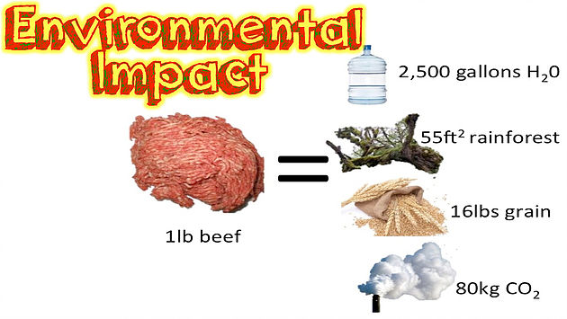
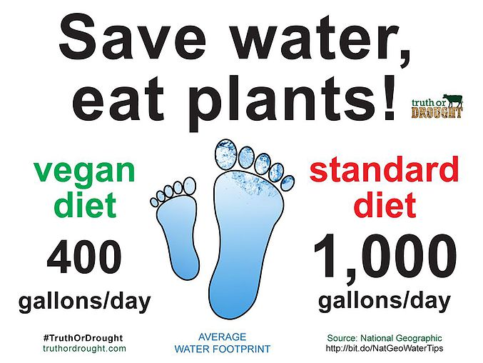

1. The Animals
More then 150 billions animals are slaughtered each year by the meat, dairy, egg and fish industry. Industries that abuse animals:
- Fashion-Every year, millions of animals are killed for the clothing industry—all in the name of fashion. Whether the clothes come from Chinese fur farms, Indian slaughterhouses, or the Australian outback, an immeasurable amount of suffering goes into every fur-trimmed jacket, leather belt, and wool sweater.
- Farming-From the meat industry’s rampant abuse of animals and environmental devastation to the tremendous health benefits of a vegan diet to helping end world hunger and deplorable working conditions in slaughterhouses, there are countless reasons why more and more people are leaving meat off their plates for good and embracing a healthy and humane vegan diet.
- Entertainmant-Animals aren’t actors, spectacles to imprison and gawk at, or circus clowns. Yet thousands of these animals are forced to perform silly, confusing tricks under the threat of physical punishment; are carted across the country in cramped and stuffy boxcars or semi-truck trailers; are kept chained or caged in barren, boring, and filthy enclosures; and are separated from their families and friends—all for the sake of human “entertainment.”
- Experimentation-Right now, millions of mice, rats, rabbits, primates, cats, dogs, and other animals are locked inside barren cages in laboratories across the country. They languish in pain, ache with loneliness, and long to be free. Instead, all they can do is sit and wait in fear of the next terrifying and painful procedure that will be performed on them

2. Your Health
Healthy Vegan Diets are filled with vitamins B1, C, and E, folic acid, magnesium, and iron while also being low in cholesterol and saturated fats. A Plant-Based Vegan Diet can reduce the risk of mortality from conditions like:
- Type 2 diabetes
- Cardiovascular disease
- Ischemic heart disease
- Hypertension
- Stroke
- Obesity
- Some cancers including prostate and colon cance
Don't just take my word for it. Here's what Clinton on what changed when he went vegan
3. The Earth
Eating a vegan diet could be the “single biggest way” to reduce your environmental impact on earth. Researchers at the University of Oxford found that cutting meat and dairy products from your diet could reduce an individual's carbon footprint from food by up to 73%. Meanwhile, if everyone stopped eating these foods, they found that global farmland use could be reduced by 75%, an area equivalent to the size of the US, China, Australia and the EU combined. Not only would this result in a significant drop in greenhouse gas emissions, it would also free up wild land lost to agriculture, one of the primary causes for mass wildlife extinction. 
4. End World Hunger
If humans stopped using land and edible crops to feed animals bred and killed for meat and dairy, we could potentially end world hunger. Sixty percent of the grain grown on the Earth is used to feed farmed animals, not humans. It takes about 6 kilos of grain to produce 1/2 kilo of meat. Raising animals for meat is an inefficient use of land that could be used for growing crops for people to eat. If humans ate the crops directly rather than through meat consumption, more people would be fed, and that food would be far healthier. The solution is simple: In order to feed people in the future, we need to make the change to a vegan diet. Not only food, but also water can be saved by going vegan. 1 lb. of Meat Equals 6 Months of Showers. And get this: One person who goes vegan can save approximately 219,000 gallons of water a year. It takes 1,000 gallons of water to produce just one gallon of milk, and beef has an overall water footprint of roughly 4 million gallons per ton. By contrast, the water footprint of vegetables is about 85,000 gallons per ton. 